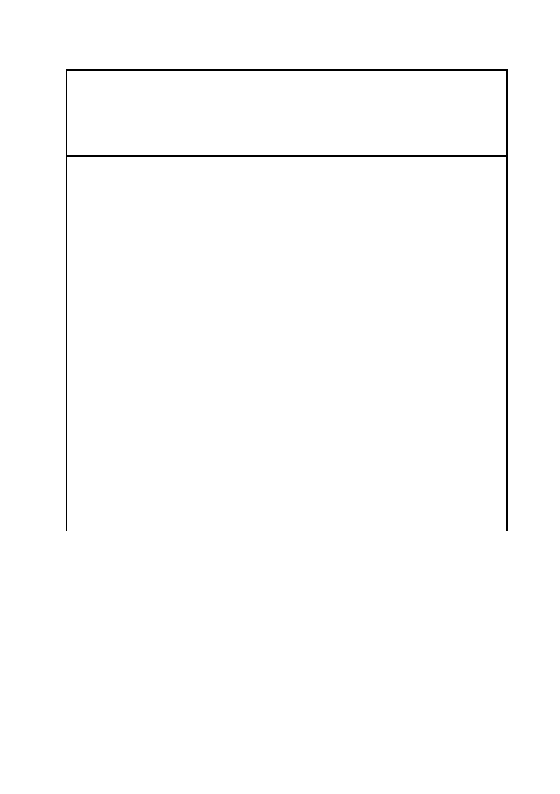

臺北市都市計畫委員會 公民或團體陳情意見綜理表
「變更臺北市信義區逸仙段二小段 33 地號等 21 筆土地（原臺北機廠）
案
名
工業區為創意文化專用區、特定專用區、道路及綠地用地主要計畫案」
及「擬定臺北市信義區逸仙段二小段 33 地號等 21 筆土地（原臺北機
廠）創意文化專用區、特定專用區、道路及綠地用地細部計畫暨劃定
都市更新地區計畫案」
首先，就以過往大眾最期待能看到的「修繕機車」為例，官方和開發
單位竟然是以地下軌道已移交高鐵為由，徹底否定這項功能。事實
上，只要技術協調，機車仍可在高鐵未營運的深夜時段駛入台北機
廠，或者走公路運輸運至北廠，依舊可以原址上演「火車修繕實境
秀」！
第二，延續前述公部門「文史妥協於開發」的思維，在文化局和臺鐵
局聘請規劃公司提出的最新方案中，保留了移車台現址、和移車台一
端的客車工場，但卻「露出馬腳」地把東興路一側的油漆工場、木模
間、電三工場等廠房完全剷平作為新開發用地。移車台的功能本在將
客車工廠修繕完畢的車廂平移至油漆工場進行另一階段的維護，那
麼，在一再強調「非剷除式發展」的規劃中，選擇破壞此「生產線」
連動性，拆除較邊緣的油漆工廠，徒留移車台，這樣的保存還有意義
可言嗎？
第三，站在環境權的思考上，臺北機廠的廠房建築在採光和通風上均
具備「綠建築」的設計風範，已獲保留廠房建築無論是陸屋頂或山屋
頂，皆有太子樓的設計，讓光線能透入廠房、自然照明。而將被拆除
的油漆工廠恰恰好是鋸齒狀屋頂，若單以建築物單元來看，在保存上
不也值得被留下來作為不同屋頂設計形式的參照？但在規劃簡報
中，這些重要元素皆未獲得相關單位的青睞，不禁讓人懷疑規劃設計
者是否真瞭解台北機廠的核心價值為何？而文化單位未善盡考察之
責，採取最龜縮的心態來運作此珍貴的遺產，若照此版本通過，台北
機廠豈非晚節不保？！
第 91 頁/共 154 頁